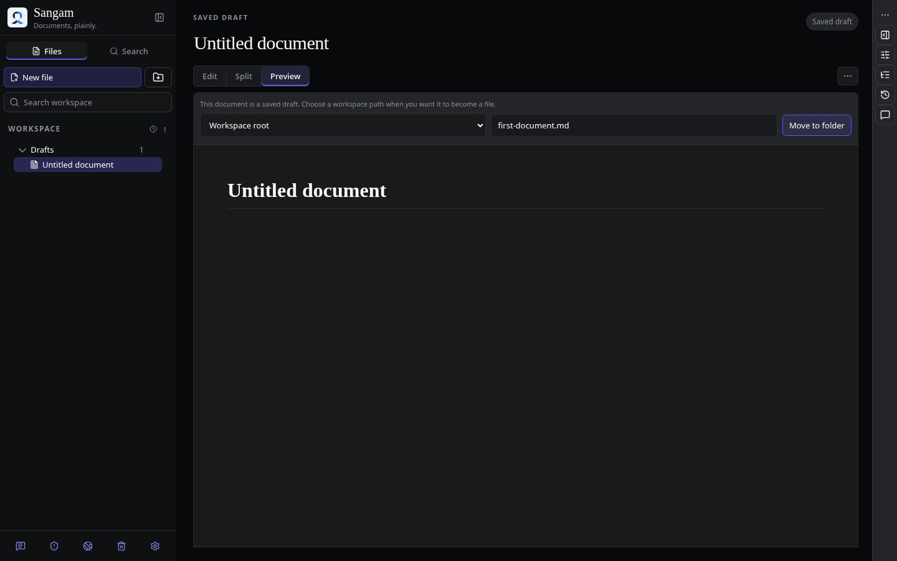
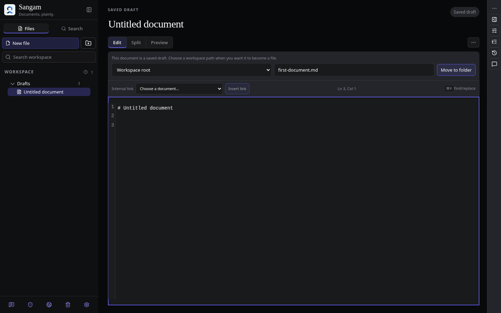
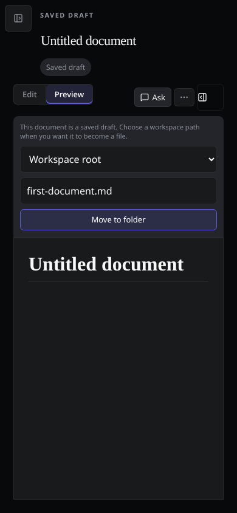
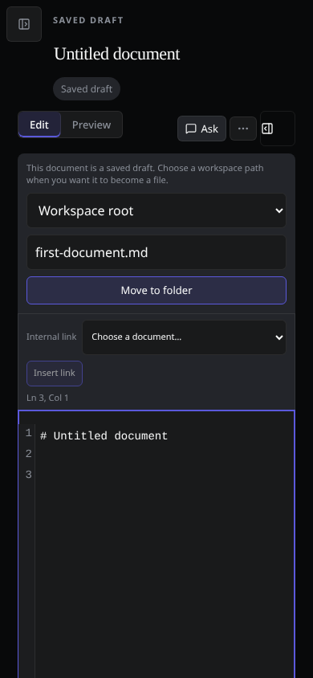

The starter heading is already content. It should not make a new document open as a document to read.




Visual check. Compared the base commit (1ffeef5) and the fix on isolated instances with the same document title and browser profiles. The selected mode and editor state are the intended differences. The inspected captures show no clipped controls or overlapping panels. The browser test checks for page-level horizontal overflow.
Behavior check. just test-e2e 'e2e/create-to-write.spec.ts' passed all 12 checks on desktop, narrow desktop, and touch-mobile Chromium. The test checks focus, the initial cursor label, typing after the starter heading, saving, and Preview selection after reload.